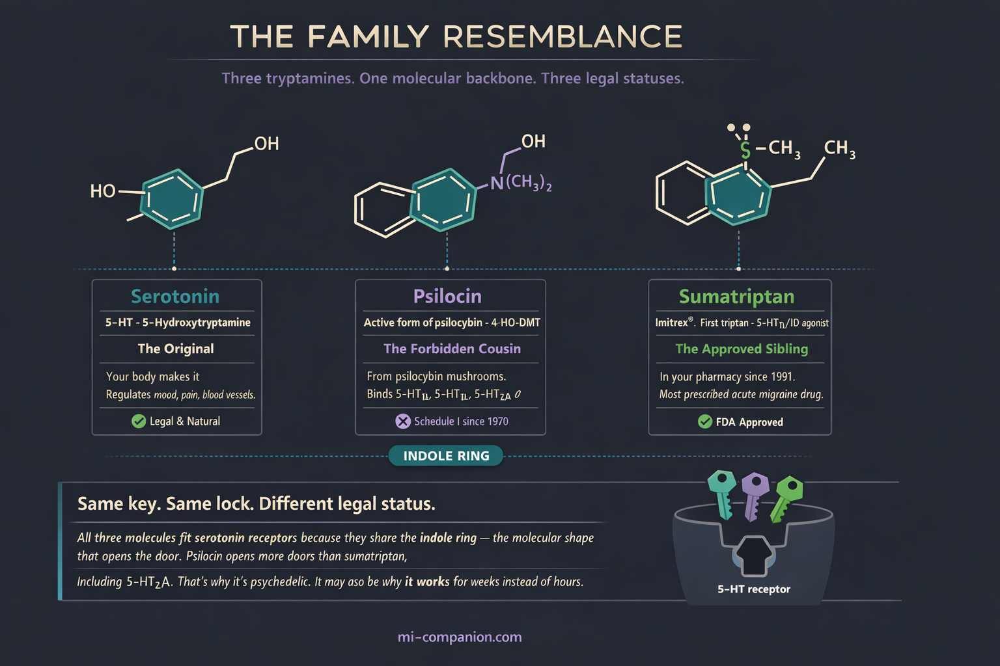
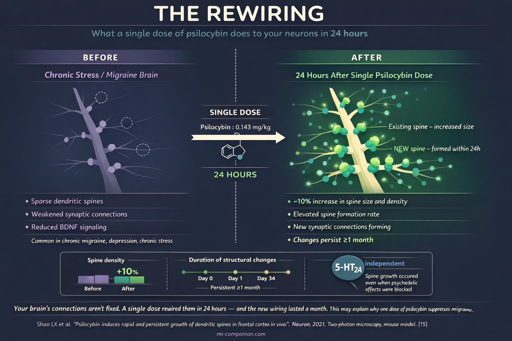

By Rustam Iuldashov
30 years lived experience with chronic migraine | Sources: 38 peer-reviewed references including Neurotherapeutics (n=10, RCT), Headache (n=18, RCT), Neuron (preclinical neuroplasticity), The Lancet (CGRP review), NEJM (serotonin syndrome), Nature (non-hallucinogenic analogues), JAMA Psychiatry (policy) | Last updated: March 12, 2026
Medical Review: This content is based on peer-reviewed research from Neurotherapeutics, Headache, Neuron, Cell Reports, The Lancet, New England Journal of Medicine, Nature, JAMA Psychiatry, Journal of the Neurological Sciences, Journal of Psychopharmacology, Cureus, Chemical Reviews, ACS Pharmacology & Translational Science, International Review of Psychiatry, Neurological Sciences, and Annals of Neurology.
Important Notice: This article is for informational purposes only and does not replace professional medical advice. The author is not a licensed physician or healthcare professional. Psilocybin is a Schedule I controlled substance under United States federal law. This article does not encourage or endorse self-treatment with psilocybin or any controlled substance. Always consult your doctor before making changes to your treatment plan.
Key Takeaways
- Psilocybin (active form: psilocin) is structurally related to serotonin and binds many of the same receptors targeted by triptans, including 5-HT1B and 5-HT1D[7][8]
- A Yale trial found that a single low dose of psilocybin reduced migraine days by 1.65 days/week over two weeks, compared to 0.15 with placebo — and the benefit was independent of the psychedelic experience[10][11]
- In a 2025 Canadian survey, 75% headache relief was the most commonly reported outcome among patients self-treating with psychedelics — but survivorship bias means the true response rate is likely lower[13]
- A single dose of psilocybin increases dendritic spine density by ~10% within 24 hours in animal models, with structural changes persisting at least one month[15]
- Combining psilocybin with triptans or SSRIs/SNRIs carries a risk of serotonin syndrome — a potentially life-threatening condition. Never combine serotonergic substances without medical supervision[36][37]
- Non-hallucinogenic psychoplastogens — compounds that preserve neuroplastic effects without the psychedelic experience — are in active development and may offer a clearer path to approved migraine treatment[32][38]
- All migraine trials to date are small (n=10–18). Larger, well-designed studies are essential before psilocybin can be considered an evidence-based migraine treatment
The Molecule Your Doctor Can’t Prescribe
A man in Scotland took LSD at a festival in the late 1990s. He wasn’t seeking treatment. He was seeking a good time. But that autumn, something didn’t happen: his annual cluster headache cycle — brutal, clockwork, inevitable for years — never arrived.[1]
He posted about it online. Other cluster headache patients — people who describe their condition as the worst pain in medicine and call themselves “clusterheads” — tried psilocybin mushrooms when they couldn’t access LSD. Reports accumulated. Attacks stopped. Remission periods stretched from weeks to months. Pain vanished.[2]
That accidental observation launched a scientific inquiry that is still unfolding. The molecule at its center — psilocybin, the active compound in “magic mushrooms” — turns out to be a structural cousin of the drugs already lining your pharmacist’s shelves. It speaks the same chemical language. It knocks on the same neurological doors. One molecule sits in your medicine cabinet. The other sits behind a federal lock labeled “Schedule I: No Accepted Medical Use.”[3]
The lock may be wrong.
The Serotonin Connection: Closer Than You Think
Both migraine treatment and psilocybin revolve around a single neurotransmitter: serotonin.
Serotonin (5-hydroxytryptamine, or 5-HT) regulates mood, blood vessel tone, and pain perception. The migraine brain has a broken relationship with it — levels plummet during attacks, trigeminal nerves flood the system with inflammatory neuropeptides, and pain takes over.[4][5]
Sumatriptan — the first triptan, still the most prescribed acute migraine drug — works by activating serotonin receptors 5-HT1B and 5-HT1D. This constricts dilated blood vessels and silences trigeminal nerve signaling.[6] Psilocybin, once the body converts it to psilocin, does something broader. It binds 5-HT2A (the receptor responsible for the psychedelic experience), but also 5-HT1B, 5-HT1D, 5-HT2B, 5-HT2C, and several others.[7][8] Psilocin hits many of the same targets triptans do — plus doors that triptans never open.
Both molecules belong to the tryptamine family. Both carry an indole ring — the molecular backbone of serotonin itself.[9] A chemist would see siblings. But sumatriptan’s relief lasts hours. Psilocybin’s appears to last weeks — sometimes months — after a single dose.[10]
Something fundamentally different is happening under the hood.

The Yale Trial That Changed the Conversation
In 2021, Dr. Emmanuelle Schindler and colleagues at Yale published the first controlled study of psilocybin in migraine. Ten participants. One dose. Results that made headache specialists pay attention.[10]
The design was elegant: each participant received both psilocybin (0.143 mg/kg — a low dose, barely psychedelic) and placebo, separated by at least two weeks, in a double-blind crossover. Over the two weeks following psilocybin, participants averaged 1.65 fewer migraine days per week. Placebo cut just 0.15 days. The difference was significant (p = 0.003). Time to the second migraine attack roughly doubled — from two days with placebo to over five with psilocybin.[10]
Some participants had no migraine at all during the entire observation window.
−1.65 days/week reduction in migraine days after a single psilocybin dose vs. −0.15 with placebo (p = 0.003)[10]
5+ days to the second migraine attack after psilocybin vs. ~2 days with placebo[10]
The most important finding wasn’t the numbers. It was what the numbers weren’t correlated with. The intensity of the psychedelic experience — how vivid, how altered, how “trippy” — had no relationship to migraine relief.[11] People who barely felt the drug got the same benefit as those who experienced full perceptual shifts. This is not a mood effect. Not a placebo-adjacent glow. The compound appears to act directly on the disease mechanism itself.
Schindler followed up in 2025 with a larger trial in Headache: 18 patients, three arms — single-dose psilocybin, two-dose psilocybin, or active placebo (diphenhydramine). This time, all groups improved similarly.[12] The result sounds discouraging until you consider the central challenge of psychedelic research: participants know when they’ve taken the real thing. Blinding breaks. Expectation amplifies. Separating drug from context in psychedelic trials remains one of the hardest problems in clinical neuroscience.
What Patients Are Already Doing
Scientists are designing trials. Patients are designing their own protocols.
At the 2025 American Headache Society meeting, Dr. Eric Baron of the Cleveland Clinic presented survey data from 2,393 Canadian adults. Within this sample, 64 reported using psychedelics specifically for headaches — 50 with migraine, 8 with cluster headache. Psilocybin was the most used and most effective substance: 46% of migraine users and 62.5% of cluster headache users named it their top choice. Most used it preventively. The most commonly reported outcome: 75% headache relief.[13]
Earlier surveys tell the same story. Sewell and colleagues’ 2006 landmark study of 53 cluster headache patients found that 22 of 26 psilocybin users said it aborted their attacks. Among 48 who used it during a cluster period, 25 reported early termination. Of 19 who took it between cycles, 18 experienced longer remission.[2] A 2023 systematic review of eight studies found psilocybin clinically significant in six. The remission period between headaches extended in 91% of participants who used psilocybin during remission.[14]
These numbers are striking. They also carry a built-in distortion that demands acknowledgment: survivorship bias. Patients who experience dramatic relief post about it on Clusterbusters, Migraine Canada forums, and Reddit. Patients for whom psilocybin did nothing — or worse, triggered a panic attack, worsened anxiety, or provoked a rebound headache — are far less likely to share their stories. The voices we hear are disproportionately the success stories. This doesn’t invalidate the signal; the consistency across different surveys, populations, and decades suggests something real is happening. But it means the true response rate is almost certainly lower than survey data suggest, and the true adverse event rate is almost certainly higher. Surveys map the territory. Only controlled trials can draw the borders.
⚠️ When to Seek Emergency Help
Psilocybin is a Schedule I controlled substance in most jurisdictions. Self-treatment with psilocybin or other psychedelics carries serious medical, psychological, and legal risks. If you or someone you know experiences severe agitation, confusion, hyperthermia (high body temperature), rapid heartbeat, muscle rigidity, or seizures after combining any serotonergic substances — including psilocybin, triptans (sumatriptan, rizatriptan), or antidepressants (SSRIs, SNRIs) — call your local emergency number immediately. These are symptoms of serotonin syndrome, a potentially life-threatening condition.[36][37]
Never combine psilocybin with triptans, SSRIs, SNRIs, MAOIs, or other serotonin-active medications without explicit guidance from a physician. Do not use this article as a basis for self-treatment.
How Psilocybin Might Rewire the Migraine Brain
If the benefit isn’t about the trip, what drives it? Three mechanisms are emerging. They may all be working at once.
Growing New Roads
Picture your brain’s signaling network as a highway system degraded by years of chronic migraine — potholes, collapsed bridges, detours that loop back on themselves. Now picture what happens when repair crews show up overnight.
In 2021, Yale researchers watched this happen in real time. Using two-photon microscopy in living mouse brains, they tracked dendritic spines — the tiny protrusions on neurons that receive signals — after a single psilocybin dose. Within 24 hours, spine size and density jumped by roughly 10%. New spines formed faster. And the changes persisted for at least a month.[15]
This is neuroplasticity — rapid, structural, lasting. Psilocybin activates pathways involving BDNF (brain-derived neurotrophic factor) and mTOR, promoting new synaptic connections in the prefrontal cortex and hippocampus.[16][17] Chronic stress, depression, and migraine all involve synaptic atrophy in these regions.[18] Psilocybin appears to reverse that damage. One dose. Weeks of repair.

Quieting the Fire
Migraine is a neuroinflammatory event. When the trigeminal nerve fires, it releases CGRP (calcitonin gene-related peptide), triggering vasodilation and a cascade of inflammation.[19][20] The entire CGRP revolution — erenumab, fremanezumab, ubrelvy — exists to block that cascade.[21]
Psilocybin produces anti-inflammatory effects through 5-HT2A activation at doses far below those needed for psychedelic experiences.[9] It modulates TNF-α and interleukins — the same pro-inflammatory cytokines elevated in migraine patients.[22][23] No study has yet directly measured psilocybin’s effect on CGRP release during migraine. But the mechanistic overlap is striking. Two treatment strategies, evolved independently, converging on the same inflammatory battlefield.
Acting on the Disease, Not the Mind
Schindler’s 2025 secondary analysis pooled data across migraine and cluster headache trials (n=34). Headache frequency changes after psilocybin were independent of psychedelic intensity and independent of mental health measures.[11]
This finding reframes everything. It means psilocybin’s anti-headache properties likely arise from direct neurological action — not improved mood, not psychological insight, not the afterglow of a meaningful experience. And it opens a door: if the mechanism is separable from the hallucination, it may be possible to engineer compounds that deliver the migraine relief without the trip.
The Cluster Headache Proving Ground
Cluster headache — often called the “suicide headache” — has been the testing ground for psychedelics in headache medicine. The evidence is further along, and the patterns matter for migraine.
In 2024, Schindler published extension data from her cluster headache RCT. Participants who received a repeat three-dose pulse of psilocybin showed a 50% reduction in attack frequency. Remarkably, whether someone responded to the first round did not predict their response to the second.[25] Each treatment appears to work independently — not building tolerance, not requiring escalation.
In Denmark, a separate team administered psilocybin to 10 chronic cluster headache patients (three doses, three weeks). Attack frequency and pain intensity both dropped significantly at four weeks. Brain imaging revealed something else: the reduction in attacks correlated with changes in hypothalamic connectivity[26] — the hypothalamus being the brain region most implicated in generating cluster headache cycles.
From accidental discovery to neuroimaging of mechanism, the cluster headache story foreshadows what may come for migraine.
The Legal Paradox
Psilocybin remains Schedule I under federal law — classified alongside heroin, defined as having no accepted medical use and high abuse potential.[3] The FDA’s own Breakthrough Therapy designation for psilocybin in depression contradicts this classification.[27] Independent drug harm analyses rank psilocybin among the lowest-risk psychoactive substances, below alcohol, tobacco, and cannabis.[31]
The legal landscape is shifting. Oregon licenses supervised psilocybin therapy. Colorado permits supervised use and decriminalizes personal possession for adults over 21. New Mexico signed the Medical Psilocybin Act in April 2025.[28] Australia allows prescription psilocybin for treatment-resistant depression. Over 36 psychedelics-related bills were introduced across US state legislatures in the 2025 session alone.[29]
None of this helps the migraine patient sitting in a neurologist’s office. There is no approved migraine indication. No prescribing pathway. No insurance code. Patients who find relief do so outside the medical system — guided by online forums, dosing protocols developed by patient communities like Clusterbusters, and their own desperation. Some break the law. All carry risk without clinical oversight.
What We Still Don’t Know — And What Could Go Wrong
Honesty demands the caveats. Every clinical trial so far has been small — 10 to 18 participants. No study has followed migraine patients longer than eight weeks. The optimal dose, frequency, and patient profile remain undefined. The blinding problem persists: how do you create a convincing placebo for a drug that reshapes perception? Active placebos like diphenhydramine and niacin are being tested, but imperfect solutions remain imperfect.[12]
We don’t know whether psilocybin works equally across migraine subtypes — episodic, chronic, with aura, without. We don’t know whether benefits sustain over years or require periodic re-treatment. Long-term safety data in migraine populations do not exist.
One gap in our knowledge is particularly dangerous: drug interactions. Most people with migraine take other serotonin-active medications. Triptans (sumatriptan, rizatriptan) are serotonin receptor agonists. SSRIs and SNRIs (sertraline, venlafaxine, duloxetine) increase serotonin availability. Adding psilocybin — itself a potent serotonin receptor agonist — to this mix creates a risk of serotonin syndrome, a potentially life-threatening condition characterized by agitation, hyperthermia, rapid heart rate, muscle rigidity, and in severe cases, seizures and organ failure.[36][37] No clinical trial has systematically evaluated this interaction. The fact that patients are self-treating with psilocybin while taking prescribed triptans and antidepressants — often without informing their neurologist — is not a hypothetical concern. It is happening now, and the safety profile in that real-world polypharmacy context is completely unknown.
What we do know: in controlled settings, with proper screening and medical oversight, psilocybin is well-tolerated. Adverse events are typically mild and transient — nausea, brief anxiety, sometimes a transient headache.[10][12] Addiction potential is negligible.[31] Serious adverse events in supervised settings are rare. But supervised settings and real-world self-treatment are not the same thing. Medication side effects are a constant reality in chronic care, but with psilocybin, the risks are both pharmacological and legal.
The evidence is promising. It is not yet conclusive. The difference matters.
The Next Frontier: Psychoplastogens
The most exciting development in this field may not involve psilocybin at all.
In 2019, David Olson’s laboratory at UC Davis coined the term psychoplastogen — a compound that promotes neural plasticity without producing a psychedelic experience.[18] The concept is elegant: if psilocybin’s migraine-suppressing effects come from neuroplasticity and anti-inflammatory action rather than from altered consciousness, then you should be able to engineer molecules that keep the therapeutic machinery while discarding the hallucination.
That engineering is already underway. Delix Therapeutics, a company spun out of Olson’s research, is developing non-hallucinogenic psychoplastogens that promote dendritic growth and synaptic connectivity through the same TrkB/BDNF pathways activated by psilocybin.[38] In 2021, researchers identified a non-hallucinogenic analogue called tabernanthalog that promoted structural neural plasticity comparable to classic psychedelics in mouse models, without producing hallucination-associated behaviors.[32] Other groups are working on similar compounds — molecules designed to pass through the regulatory and social barriers that classic psychedelics cannot.
For migraine, the implications are profound. A non-hallucinogenic psychoplastogen could be taken at home, prescribed by a neurologist, covered by insurance, studied in conventional double-blind trials without the blinding problem. No supervised sessions. No Schedule I license. No legal gray zone. The federal lock doesn’t need to be picked — these molecules walk through a different door entirely.
These compounds are still in early development. None has completed Phase III trials for any indication. But the speed of progress — from concept to named molecules to funded clinical programs in under five years — reflects how urgently the field recognizes that separating therapeutic mechanism from psychedelic experience is the key to unlocking access.
Waiting for Permission
Several psilocybin trials are recruiting. The psychoplastogen pipeline is advancing. The science is moving. But for people living with migraine today, none of this has arrived.
I’ve lived with migraine for 30 years. I’ve watched treatments arrive — triptans, CGRP antibodies, gepants — each one expanding the toolkit, each one changing lives. I know what it means to have one more option. And I know what it costs when that option exists in a lab, validated in a journal, discussed at conferences — but cannot be studied at scale, prescribed by a doctor, or accessed by a patient.
Psilocybin is not yet proven for migraine. The trials are too small, the follow-up too short, the questions too many. But the molecule is not speculative either. It is structurally related to the drugs we trust. It targets the pathways we know matter. It produces neuroplastic changes we can photograph. And patients who have run out of options are already using it — with or without science’s permission, with or without a doctor’s guidance, with or without the safety net that clinical oversight provides.
The migraine brain and psilocybin speak the same chemical language. It’s time we let them finish the conversation — in a laboratory, under proper supervision, with the rigor this molecule deserves.
⚕️ Important Medical Disclaimer
This article is for informational and educational purposes only and does not constitute medical advice, diagnosis, or treatment. The author, Rustam Iuldashov, is not a licensed physician, neurologist, or healthcare professional. He is a patient advocate with 30 years of personal experience living with chronic migraine.
All clinical claims in this article are sourced from peer-reviewed research published in indexed medical journals. Study designs and sample sizes are noted where applicable.
Psilocybin is a Schedule I controlled substance under United States federal law and is illegal in most jurisdictions worldwide. This article does not encourage, endorse, or provide guidance for the use of psilocybin or any other controlled substance outside of legally sanctioned, medically supervised settings. Self-treatment with psychedelics carries serious medical, psychological, and legal risks — including the risk of serotonin syndrome when combined with triptans, SSRIs, SNRIs, or MAOIs.
Always consult a qualified healthcare provider for questions about your individual health, migraine treatment, or medication decisions. This content was last reviewed for accuracy on March 12, 2026.
References
- Sewell RA, Halpern JH, Pope HG Jr. “Response of cluster headache to psilocybin and LSD.” Neurology, 66:1920-1922 (2006). doi:10.1212/01.wnl.0000219761.05466.43. Study design: Survey/questionnaire. n=53.
- Schindler EAD, Gottschalk CH, Weil MJ, et al. “Indoleamine hallucinogens in cluster headache: results of the Clusterbusters Medication Use Survey.” Journal of Psychoactive Drugs, 47:372-381 (2015). doi:10.1080/02791072.2015.1107664. Study design: Cross-sectional survey. n=496.
- US Drug Enforcement Administration. “Psilocybin Drug Fact Sheet.” DEA (2024). Regulatory document.
- Hamel E. “Serotonin and migraine: biology and clinical implications.” Cephalalgia, 27:1293-1300 (2007). doi:10.1111/j.1468-2982.2007.01476.x. Study design: Review.
- Goadsby PJ, Lipton RB, Ferrari MD. “Migraine — current understanding and treatment.” New England Journal of Medicine, 346:257-270 (2002). doi:10.1056/NEJMra010917. Study design: Review.
- Humphrey PP, Feniuk W, Perren MJ, et al. “GR43175, a selective agonist for the 5-HT1-like receptor in dog isolated saphenous vein.” British Journal of Pharmacology, 94:1123-1132 (1988). doi:10.1111/j.1476-5381.1988.tb11631.x. Study design: Preclinical pharmacology.
- Ray TS. “Psychedelics and the human receptorome.” PLoS ONE, 5:e9019 (2010). doi:10.1371/journal.pone.0009019. Study design: Computational receptor binding analysis.
- Lawrence DW. “Self-administration of psilocybin for the acute treatment of migraine: A case report.” Innovations in Clinical Neuroscience, 20(7-9):32-36 (2023). Study design: Case report. n=1.
- Wikipedia contributors. “Psilocybin.” Wikipedia, Accessed March 2026. Summary of pharmacological properties including anti-inflammatory effects and structural relationship to serotonin.
- Schindler EAD, Sewell RA, Gottschalk CH, et al. “Exploratory controlled study of the migraine-suppressing effects of psilocybin.” Neurotherapeutics, 18:534-543 (2021). doi:10.1007/s13311-020-00962-y. Study design: Double-blind, placebo-controlled crossover. n=10.
- Schindler EAD. “Psilocybin’s effects on headache frequency are not related to acute psychedelic effects or measures of mental health.” Neurology, 104(7 Suppl 1):P7-12.001 (2025). doi:10.1212/WNL.0000000000210945. Study design: Secondary pooled analysis. n=34.
- Schindler EAD, Gottschalk CH, Pittman BP, D’Souza DC. “Comparing single- and repeat-dose psilocybin with active placebo for migraine prevention in an exploratory randomized controlled clinical trial.” Headache, 2025;00:1-11 (2025). doi:10.1111/head.70024. Study design: RCT, double-blind, parallel group. n=18.
- Baron EP, Lucas P, Lake S. “Psychedelic use in migraine and cluster headache patients within a subset of the cross-sectional Canadian Psychedelic Survey.” Poster, AHS Annual Meeting, Minneapolis, June 2025. Study design: Cross-sectional survey. n=2,393 (64 headache self-treaters).
- Goel R, Busse JW, Engel B, et al. “A systematic review to assess the use of psilocybin in the treatment of headaches.” Cureus, 15(11):e49093 (2023). doi:10.7759/cureus.49093. Study design: Systematic review. 8 studies.
- Shao LX, Liao C, Gregg I, et al. “Psilocybin induces rapid and persistent growth of dendritic spines in frontal cortex in vivo.” Neuron, 109(16):2535-2544.e4 (2021). doi:10.1016/j.neuron.2021.06.008. Study design: Preclinical (mouse), two-photon microscopy.
- Zhao X, Du Y, Yao Y, et al. “Psilocybin promotes neuroplasticity and induces rapid and sustained antidepressant-like effects in mice.” Journal of Psychopharmacology, 38(6):537-549 (2024). doi:10.1177/02698811241249436. Study design: Preclinical (mouse).
- Ly C, Greb AC, Cameron LP, et al. “Psychedelics promote structural and functional neural plasticity.” Cell Reports, 23:3170-3182 (2018). doi:10.1016/j.celrep.2018.05.022. Study design: Preclinical (in vitro + in vivo).
- Olson DE. “Biochemical mechanisms underlying psychedelic-induced neuroplasticity.” Biochemistry, 61:127-136 (2022). doi:10.1021/acs.biochem.1c00812. Study design: Mechanistic review.
- Goadsby PJ, Edvinsson L, Ekman R. “Release of vasoactive peptides in the extracerebral circulation of humans and the cat during activation of the trigeminovascular system.” Annals of Neurology, 23:193-196 (1988). doi:10.1002/ana.410230214. Study design: Experimental physiology.
- Durham PL, Russo AF. “Regulation of calcitonin gene-related peptide secretion by a serotonergic antimigraine drug.” Journal of Neuroscience, 19:3423-3429 (1999). doi:10.1523/JNEUROSCI.19-09-03423.1999. Study design: Preclinical (cell culture).
- Lancet Editorial. “Calcitonin gene-related peptide-targeted therapy in migraine: current role and future perspectives.” The Lancet, 2025. doi:10.1016/S0140-6736(25)00109-6. Study design: Review.
- Martami F, Razeghi Jahromi S, Togha M, et al. “The serum level of inflammatory markers in chronic and episodic migraine.” Neurological Sciences, 39(10):1741-1749 (2018). doi:10.1007/s10072-018-3493-0. Study design: Case-control.
- Flanagan TW, Nichols CD. “Psychedelics as anti-inflammatory agents.” International Review of Psychiatry, 30(4):363-375 (2018). doi:10.1080/09540261.2018.1481827. Study design: Review.
- Duan W, Cao D, Wang S, Cheng J. “Serotonin 2A receptor (5-HT2AR) agonists: Psychedelics and non-hallucinogenic analogues as emerging antidepressants.” Chemical Reviews, 124(1):124-163 (2024). doi:10.1021/acs.chemrev.3c00375. Study design: Review.
- Schindler EAD, Sewell RA, Gottschalk CH, et al. “Psilocybin pulse regimen reduces cluster headache attack frequency in the blinded extension phase of a randomized controlled trial.” Journal of the Neurological Sciences, 460:122993 (2024). doi:10.1016/j.jns.2024.122993. Study design: Blinded extension of RCT. n=10.
- Madsen MK, Petersen AS, Stenbaek DS, et al. “CCH attack frequency reduction after psilocybin correlates with hypothalamic functional connectivity.” Headache, 64:55-67 (2024). doi:10.1111/head.14656. Study design: Open-label + neuroimaging. n=10.
- Siegel JS, Daily JE, Perry DA, Nicol GE. “Psychedelic drug legislative reform and legalization in the US.” JAMA Psychiatry, 80(1):77-83 (2023). doi:10.1001/jamapsychiatry.2022.4101. Study design: Policy analysis.
- Wikipedia contributors. “Psilocybin decriminalization in the United States.” Updated January 2026.
- Wikipedia contributors. “Legal status of psilocybin mushrooms.” Updated March 2026.
- Schindler EAD. “The potential of psychedelics for the treatment of episodic migraine.” Current Pain and Headache Reports, 27(9):489-495 (2023). doi:10.1007/s11916-023-01149-y. Study design: Narrative review.
- Nutt DJ, King LA, Phillips LD. “Drug harms in the UK: a multicriteria decision analysis.” The Lancet, 376:1558-1565 (2010). doi:10.1016/S0140-6736(10)61462-6. Study design: Multi-criteria decision analysis.
- Cameron LP, Tombari RJ, Lu J, et al. “A non-hallucinogenic psychedelic analogue with therapeutic potential.” Nature, 589:474-479 (2021). doi:10.1038/s41586-020-3008-z. Study design: Preclinical (mouse).
- Bjurenfalk Z, Cosmo A, Simonsson O, Ran C. “Lifetime classic psychedelic use and headaches: A cross-sectional study.” Journal of Psychopharmacology, 2025. doi:10.1177/02698811251324372. Study design: Cross-sectional (UK Biobank).
- Andersson M, Persson M, Kjellgren A. “Psychoactive substances as a last resort.” Journal of Psychoactive Drugs, 49(5):345-355 (2017). doi:10.1080/02791072.2017.1366560. Study design: Qualitative inquiry.
- Gonzalez-Maeso J, Weisstaub NV, Zhou M, et al. “Hallucinogens recruit specific cortical 5-HT2A receptor-mediated signaling pathways.” Neuron, 53:439-452 (2007). doi:10.1016/j.neuron.2007.01.008. Study design: Preclinical (mouse, knockout).
- Boyer EW, Shannon M. “The serotonin syndrome.” New England Journal of Medicine, 352:1112-1120 (2005). doi:10.1056/NEJMra041867. Study design: Clinical review.
- Gillman PK. “Triptans, serotonin agonists, and serotonin syndrome (serotonin toxicity): a review.” Headache, 50(2):264-272 (2010). doi:10.1111/j.1526-4610.2009.01575.x. Study design: Review.
- Olson DE. “The subjective effects of psychedelics may not be necessary for their enduring therapeutic effects.” ACS Pharmacology & Translational Science, 4(2):563-567 (2021). doi:10.1021/acsptsci.0c00192. Study design: Perspective/opinion.

How We Create Content
- Peer-reviewed sources only. Neurotherapeutics, Headache, Neuron, Cell Reports, The Lancet, New England Journal of Medicine, Nature, JAMA Psychiatry, Journal of the Neurological Sciences, Journal of Psychopharmacology, Cureus, Chemical Reviews, ACS Pharmacology & Translational Science, International Review of Psychiatry, Neurological Sciences, Annals of Neurology, Cephalalgia, British Journal of Pharmacology, PLoS ONE.
- Study transparency. Study design and sample sizes noted for all clinical references.
- Source verification. All claims backed by numbered references with DOI links.
- Experience + Science. 30 years personal migraine experience combined with peer-reviewed evidence.
- Regular updates. Articles reviewed when significant new research emerges.
- No conflicts of interest. No funding from pharmaceutical companies, psychedelic research organizations, psilocybin therapy providers, or psychoplastogen developers.
Track Your Patterns. Know Your Brain.
Migraine Companion helps you log attacks, identify triggers, and generate shareable reports — so when new treatments like psychoplastogens reach clinical practice, you’ll have years of data ready for the conversation with your doctor.
Last reviewed: March 2026
Next scheduled review: September 2026